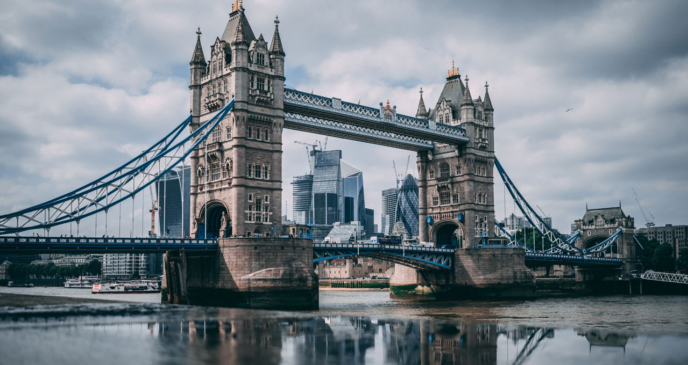

Welcome to London
The Square Mile
Reference to the area of the City. Both these terms are also used as metonyms for the UK's financial services industry, traditionally concentrated in the City of London
Roman London
Although there is evidence of scattered Brythonic settlements in the area, the first major settlement was founded by the Romans about four years after the invasion of AD 43.[73] This lasted only until around AD 61
About
Prehistory of London
In 1993, the remains of a Bronze Age bridge were found on the south foreshore, upstream of Vauxhall Bridge. This bridge either crossed the Thames or reached a now lost island in it. Two of those timbers were radiocarbon dated to between 1750 BC and 1285 BC.
Transport
Underground
The London Underground is a public rapid transit system serving the capital city London and some parts of the adjacent counties of in the United Kingdom.
London has an extensive and developed transport network which includes both private and public services. Journeys made by public transport systems account for 37% of London's journeys while private services accounted for 36% of journeys. London's public transport network serves as the central hub for the United Kingdom in rail, air and road transport.-wikipedia